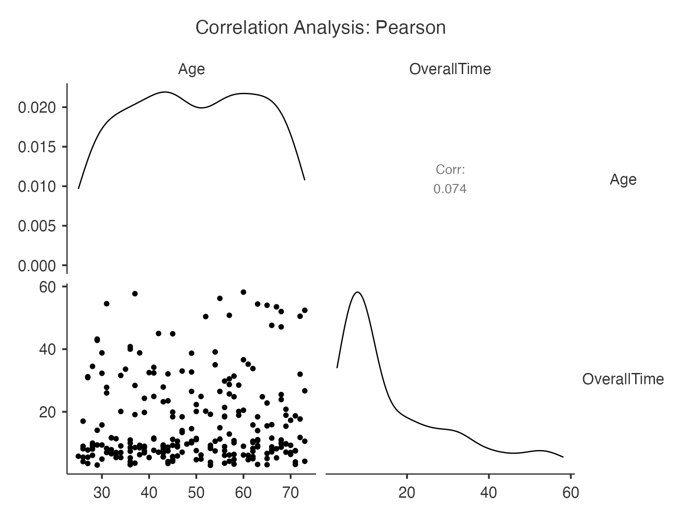

Vignette: Comprehensive Correlation Analysis with ClinicoPath
Analysis by Claude
2025-07-03
Source:vignettes/clinicopath-descriptives-21-correlation-analysis.Rmd
clinicopath-descriptives-21-correlation-analysis.RmdIntroduction
The correlation function in ClinicoPath provides
comprehensive correlation analysis for exploring relationships between
continuous variables. It supports multiple correlation methods (Pearson,
Spearman, Kendall), significance testing, confidence intervals, and
various visualization options. The function is designed for clinical
researchers who need robust correlation analysis with publication-ready
output.
When to Use Correlation Analysis
Correlation analysis is appropriate when: - Examining linear relationships between continuous variables - Exploring associations in biomarker data - Investigating relationships between clinical measurements - Assessing multicollinearity before regression analysis - Validating measurement scales and instruments
Key Features: - Multiple correlation methods for different data types - Significance testing with multiple comparison awareness - Confidence intervals for effect size estimation - Natural language reporting for clinical interpretation - Flexible visualization options
# Load required libraries
library(ClinicoPath)
# Load the histopathology dataset
data(histopathology, package = "ClinicoPath")
# Examine available numeric variables
numeric_vars <- names(histopathology)[sapply(histopathology, is.numeric)]
head(numeric_vars, 10)
#> [1] "ID" "Age" "Grade" "TStage"
#> [5] "Anti-X-intensity" "Anti-Y-intensity" "OverallTime" "Outcome"
#> [9] "Rater 1" "Rater 2"Basic Correlation Analysis
Let’s start with a simple correlation analysis between clinical measurements:
# Basic correlation analysis - use only two variables
basic_correlation <- jcorrelation(
data = histopathology,
vars = c("Age", "OverallTime")
)
# Display the basic correlation results
print(basic_correlation)
#>
#> CORRELATION ANALYSIS
#>
#> Correlation Matrix
#> ────────────────────────────────────────────
#> Variable Age OverallTime
#> ────────────────────────────────────────────
#> Age — 0.07400000
#> OverallTime 0.07400000 —
#> ────────────────────────────────────────────
#>
#>
#> Pairwise Correlations
#> ─────────────────────────────────────────────────────────────────────────────────────────────────────────────
#> Variable 1 Variable 2 r p t df Lower Upper N
#> ─────────────────────────────────────────────────────────────────────────────────────────────────────────────
#> Age OverallTime 0.0738587 0.2474876 1.1592384 245 -0.0514349 0.1968633 247
#> ─────────────────────────────────────────────────────────────────────────────────────────────────────────────
#>
#>
#> Summary Statistics
#> ──────────────────────────
#> Statistic Value
#> ──────────────────────────
#> ──────────────────────────
#>
#>
#> <div style='background-color: #f8f9fa; padding: 15px; border-radius:
#> 5px; margin: 10px 0;'><h4 style='color: #495057; margin-top:
#> 0;'>Correlation Analysis Summary
#>
#> Pearson's correlation analysis was performed on 2 variables with 247
#> complete observations. Out of 1 pairwise correlations, 0 (0%) were
#> statistically significant at α = 0.05.
Understanding the Output
The correlation function provides several result components:
- Correlation Matrix: Overview of all pairwise correlations
- Detailed Tests: Individual correlation tests with statistics
- Summary Statistics: Overall correlation characteristics
- Natural Language Report: Clinical interpretation
- Plots: Visualization options
Correlation Methods
Pearson Correlation
Pearson correlation measures linear relationships and is appropriate for normally distributed continuous variables:
# Pearson correlation (default)
pearson_result <- jcorrelation(
data = histopathology,
vars = c("Age", "OverallTime", "MeasurementA", "MeasurementB")
)
# This provides parametric correlation coefficients with confidence intervalsSpearman Correlation
Spearman correlation is rank-based and appropriate for ordinal data or non-normal distributions:
# Spearman correlation for ordinal or non-normal data
spearman_result <- jcorrelation(
data = histopathology,
vars = c("Grade", "TStage", "Anti-X-intensity", "Anti-Y-intensity")
)
# Grade and TStage are ordinal, intensity measures may be non-normalKendall Correlation
Kendall’s tau is another rank-based correlation, more robust for small samples:
# Kendall correlation for robust analysis
kendall_result <- jcorrelation(
data = histopathology,
vars = c("Age", "Grade", "TStage")
)
# Kendall's tau is preferred for small samples or many tied valuesSignificance Testing and Confidence Intervals
Hypothesis Testing Options
# Two-sided test (default) - tests if correlation ≠ 0
two_sided <- jcorrelation(
data = histopathology,
vars = c("MeasurementA", "MeasurementB", "Measurement1")
)
# One-sided test - tests if correlation > 0
positive_test <- jcorrelation(
data = histopathology,
vars = c("Age", "OverallTime")
)
# Test for negative correlation
negative_test <- jcorrelation(
data = histopathology,
vars = c("Age", "OverallTime")
)Confidence Intervals
# Different confidence levels
ci_95 <- jcorrelation(
data = histopathology,
vars = c("MeasurementA", "MeasurementB", "Measurement1", "Measurement2")
)
ci_99 <- jcorrelation(
data = histopathology,
vars = c("MeasurementA", "MeasurementB")
)
# 99% CI will be wider, indicating more uncertaintySignificance Flagging and Multiple Comparisons
When analyzing multiple correlations, it’s important to consider multiple comparison issues:
# Conservative significance testing
conservative_analysis <- jcorrelation(
data = histopathology,
vars = c("Age", "OverallTime", "MeasurementA", "MeasurementB", "Measurement1")
)
# Standard significance testing
standard_analysis <- jcorrelation(
data = histopathology,
vars = c("Age", "OverallTime", "MeasurementA", "MeasurementB", "Measurement1")
)Grouped Analysis
Analyze correlations within subgroups:
# Correlation analysis by sex
sex_stratified <- jcorrelation(
data = histopathology,
vars = c("Age", "OverallTime", "MeasurementA", "MeasurementB")
)
# Correlation analysis by treatment group
treatment_stratified <- jcorrelation(
data = histopathology,
vars = c("Age", "OverallTime", "MeasurementA")
)Visualization Options
Correlation Matrix Plot
# Matrix visualization
matrix_plot <- jcorrelation(
data = histopathology,
vars = c("Age", "OverallTime", "MeasurementA", "MeasurementB", "Anti-X-intensity")
)
# Creates a color-coded correlation matrixPairs Plot
# Pairs plot with correlations and distributions
pairs_plot <- jcorrelation(
data = histopathology,
vars = c("Age", "OverallTime", "MeasurementA", "MeasurementB")
)
# Shows scatterplots, correlations, and distributionsClinical Examples
Example 1: Biomarker Validation
# Correlating different measurement methods
biomarker_correlation <- jcorrelation(
data = histopathology,
vars = c("MeasurementA", "MeasurementB", "Measurement1", "Measurement2")
)
# This helps validate measurement consistency across methodsExample 2: Age and Clinical Outcomes
# Examining age relationships with clinical variables
age_analysis <- jcorrelation(
data = histopathology,
vars = c("Age", "OverallTime", "Grade", "TStage")
)
# Spearman is appropriate for mixed continuous/ordinal dataExample 3: Immunohistochemistry Intensity Correlation
# Analyzing relationships between IHC markers
ihc_correlation <- jcorrelation(
data = histopathology,
vars = c("Anti-X-intensity", "Anti-Y-intensity", "Rater A", "Rater B")
)
# This assesses co-expression patterns and rater agreementAdvanced Analysis Features
Comprehensive Multi-Variable Analysis
# Large correlation matrix with summary statistics
comprehensive_analysis <- jcorrelation(
data = histopathology,
vars = c("Age", "Grade", "TStage", "Anti-X-intensity", "Anti-Y-intensity",
"OverallTime", "MeasurementA", "MeasurementB")
)
# With >2 variables, summary statistics table is generatedNatural Language Reporting
The correlation function provides automated interpretation:
# Analysis with detailed reporting
reported_analysis <- jcorrelation(
data = histopathology,
vars = c("Age", "OverallTime", "MeasurementA", "MeasurementB")
)
# The report provides clinical interpretation of findingsInterpreting Correlation Results
Correlation Strength Guidelines
Correlation Coefficient Interpretation: - |r| <
0.1: Negligible - 0.1 ≤ |r| < 0.3: Weak - 0.3 ≤ |r| < 0.5:
Moderate
- 0.5 ≤ |r| < 0.7: Strong - |r| ≥ 0.7: Very strong
Clinical Significance vs Statistical Significance
# Example of clinically meaningful correlation
clinical_example <- jcorrelation(
data = histopathology,
vars = c("Age", "OverallTime", "MeasurementA")
)
# Consider both p-value and effect size (correlation coefficient)Special Considerations
Handling Missing Data
# The function uses complete cases by default
missing_data_example <- jcorrelation(
data = histopathology,
vars = c("Age", "OverallTime", "MeasurementA", "MeasurementB")
)
# Missing values are automatically excluded pairwiseSample Size Considerations
# Small sample analysis
small_sample <- histopathology[1:30, ]
small_correlation <- jcorrelation(
data = small_sample,
vars = c("Age", "OverallTime", "MeasurementA")
)Non-linear Relationships
# For non-linear relationships, consider Spearman
nonlinear_example <- jcorrelation(
data = histopathology,
vars = c("Age", "Grade", "TStage")
)
# Pairs plots help identify non-linear patternsPublication-Ready Analysis
Complete Analysis Template
# Comprehensive analysis for publication
publication_analysis <- jcorrelation(
data = histopathology,
vars = c("Age", "OverallTime", "MeasurementA", "MeasurementB",
"Anti-X-intensity", "Anti-Y-intensity")
)Reporting Guidelines
When reporting correlation results:
- Method: Specify correlation method and rationale
- Sample size: Report number of complete observations
- Effect size: Report correlation coefficients with confidence intervals
- Significance: Report p-values with multiple comparison adjustments
- Interpretation: Provide clinical context for findings
Best Practices for Clinical Research
Multiple Comparison Adjustment
# When testing many correlations, use conservative alpha
multiple_testing <- jcorrelation(
data = histopathology,
vars = c("Age", "Grade", "TStage", "Anti-X-intensity", "Anti-Y-intensity",
"OverallTime", "MeasurementA", "MeasurementB")
)
# Consider Bonferroni correction: α/number_of_testsExploratory vs Confirmatory Analysis
# Exploratory analysis - broader significance threshold
exploratory <- jcorrelation(
data = histopathology,
vars = c("Age", "OverallTime", "MeasurementA", "MeasurementB",
"Anti-X-intensity", "Anti-Y-intensity")
)
# Confirmatory analysis - stricter threshold
confirmatory <- jcorrelation(
data = histopathology,
vars = c("MeasurementA", "MeasurementB") # Pre-specified hypothesis
)Quality Control and Validation
# Assess measurement quality through correlation
quality_control <- jcorrelation(
data = histopathology,
vars = c("Rater A", "Rater B", "Rater 1", "Rater 2")
)
# High correlations indicate good inter-rater reliabilityTroubleshooting Common Issues
Low Statistical Power
# For small effects, ensure adequate sample size
power_example <- jcorrelation(
data = histopathology,
vars = c("Age", "OverallTime")
)
# Wide confidence intervals suggest insufficient powerOutliers and Robust Analysis
# Spearman correlation is more robust to outliers
robust_analysis <- jcorrelation(
data = histopathology,
vars = c("Age", "OverallTime", "MeasurementA")
)
# Pairs plots help identify potential outliersConclusion
The correlation function in ClinicoPath provides a
comprehensive toolkit for correlation analysis in clinical research. Key
advantages include:
- Multiple methods: Pearson, Spearman, and Kendall correlations
- Robust statistics: Confidence intervals and significance testing
- Clinical focus: Natural language reporting and interpretation
- Flexible visualization: Matrix plots, pairs plots, and custom options
- Quality assurance: Proper handling of missing data and edge cases
The function integrates seamlessly with clinical workflows and provides publication-ready output for correlation analyses in pathology and medical research.
Key Recommendations
- Choose appropriate methods: Pearson for normal continuous data, Spearman for ordinal or non-normal data
- Report effect sizes: Always include correlation coefficients with confidence intervals
- Address multiple comparisons: Use conservative significance thresholds when testing many correlations
- Visualize relationships: Use plots to identify patterns and validate assumptions
- Provide clinical context: Interpret statistical findings in terms of clinical significance
This comprehensive approach ensures reliable and interpretable correlation analyses for clinical research applications.